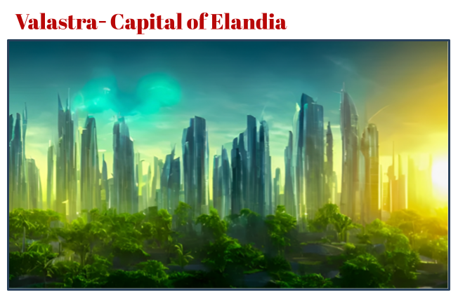
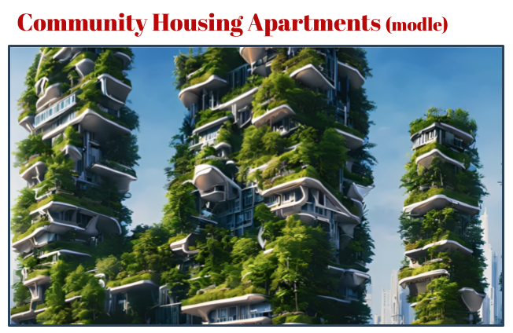
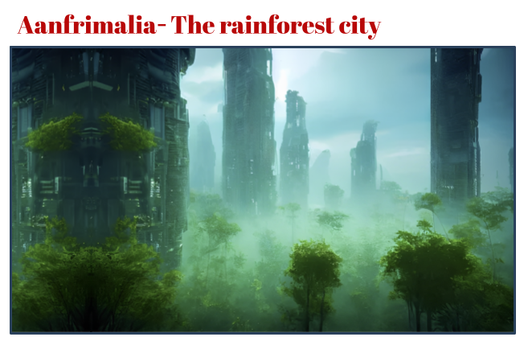
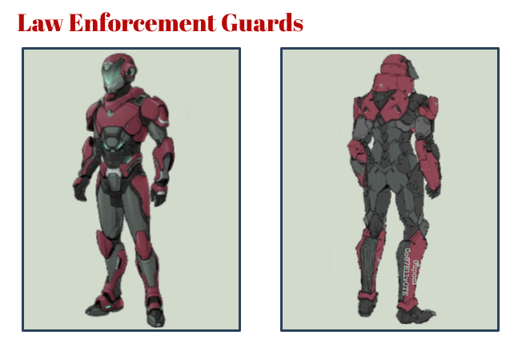

Why should YOU vote for ELLIOT?
There are many reasons for why YOU should vote for ELLIOT to become leader of Ellandia. However the main reason is because YOU have no other choice. :)
Elliot will be a strong and devoted leader who will guide our beloved country through its struggles. Wars will not break out under ELLIOTs comand as she want to work towards a paeceful country. Safety, peace and happiness in Ellandia is a top priority for ELLIOT so she will do who best to make sure everybody is happy.
We trust everyone to follow and give ELLIOT their undying loyalty and devotion, however those who continuesly defy and rebel against ELLIOT and her new found laws may face punishment such as a few months in prison.
New officers will be enforced all throughout Ellandia called 'Law Enforcement Guards' whos job is to ensure no one is defying ELLIOT by breaking the law. We want to work towards a crime free Ellandia so these guards will help ensure that. They are not agresive or dangerous and are here to ensure the lives of Ellandia citizens is great!

This is an image of Valastra, our countries capital. As you can see it looks very different from what Valastra looks like today. Well thats because this is an image of what we invistion Valastra to be.
With Elliot in control we will have the power to completly redesign our country. Our buildings will be reenforced so they will be able to withstand any disaster aswell as making the city look great. Forests will be replenished through out Valastra bring back our ecosystym.
How is ELLIOT going to regrow a whole countrys worth of forests? Well thanks to our new and adavance high tech engineering we have descovered how to geneticly modify palnts molicules and dna to allow them to grow 10x faster. In 2 to 5 years of ELLIOT being leader all of Ellandias forest would have regrown.

Here is what we invition our Comunity Housing Apartments to look like. These apartments are designed to house 100 to 350 people per tower. The rooms have been designed to be small but liveable allowing 1 to 5 people live in one apartment depending on the room type.
We will help you get back on your feet. Allowing you to become employed and earning your own money to provide for yourself. The apartments will be free but only those who meet our criteria of being either homelss, or on the brink of lossing ones home shall be allowed to stay here. We do exspect you to respect your space and outhers by keeping your erea clean and being polite. Food and water will help be provided. If you are nolonger in need of our services here at the Comunity Housing Apartments we will have you moved to a proper home where you are to caitor to yourselves.
By 2040 we entend to have homed over 50% of the homless and by 2060 we hope to home over 80% to 100%.
_
What will ELLIOT do as leader?
Under ELLIOTS reign we plan to rebuild Ellandia to make it a better coutry for all. We seek to eliminate pollution completely by becoming a green county. Everything will become recyclable and strict rules will be set in about littering and waste. Our main source of fuel will be renewable energies and a ban will go out for any non-renewable fuels such as oils and coal. Our vehicles will also become electric and recharging will cost little.
We have also created and designed plans to rebuild our cities to make them more accessible and appealing. Roads and building will be upgraded and reinforced and accessibility will be built to allow those who need it to be able to go anywhere they like. Trees and plants will we planted throughout Ellandia to restore nature including in our citys.
With YOUR vote we will have the power to be able to help ensure people have a home. We plan to help home the homeless in what we've called community housing apartments where those who have nowhere to live are able to live in one of these apartments. The apartments are small but practicle and have everything one needs to live.

In the photo above is Anafrimalia, the city which was once a lush rainforest before being destryed to creat room for humans. We plan to, like Valastra, bring back the rainforest which was once there. When ELLIOT is leader all of Ellandia will look like this. Lush, alive and completly under ELLIOTS control.
Valastra and Anafrimalia is not the only part in Ellandia which will be redesigned. All of our citys will be reconstructed, including, the smaller towns/citys like Kratonia, Narapore, Frantainia and Saplayne. With these new upgrades Ellandia will a be strong and independent. Thats why we need YOUR vote for ELLIOT to be able to do this. And once all of ELLIOTS plans have sucseeded Ellandia will be restored and made anew.

Above is the first model of the Law Enforcment Guards. Their job will be to keep order and to stop crime and the breaking of the law. This ranges from stopping someone from littering or polluting to stopping real crime like robbery or assult. With their help order and peace will be kept.
Though these new guards may seem scary or threatning, remember they are Ellandia citizens like yourself. Though they are on patrol, be kind and ask them how their day is going. Here in Ellandia, we want everyone to feel safe and welcomed.
The Law Enforcement Guards suits are designed to be invincible. It is made out of special Ellandia metal which allows it to be bullet and weapon proof. The suit inside is made out of special fabric which keeps your body at the perfect temperature no matter the temperature outside. And though the suits may look bulky, it is designed to be comfortable and easy to wear. The Law Enforcment Guard outfit is heavily armored incase the guards are facew with a real threat. With the armor they will be able to deal with the treat with out facing any harm. However we do hope that one day this armor will not be needed as we work towards a crime free country.